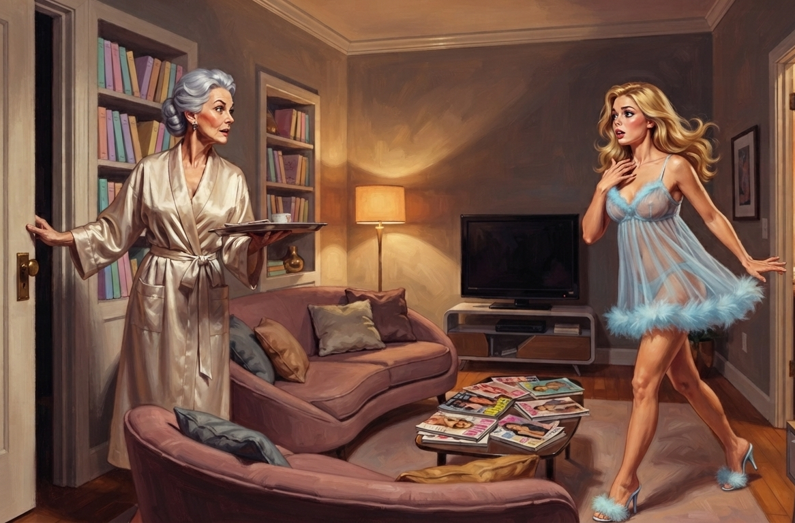
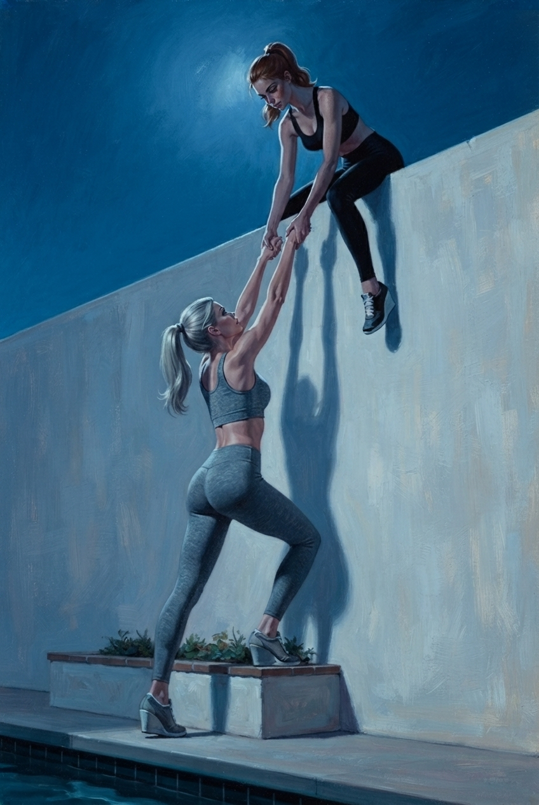

The day after was exactly like every day before it, and Carly could not get over how much that offended her.
She sat at the vanity while Connie worked a curling iron through the ends of her hair, and she watched her own gushing bright face receive instruction on how to set a wave so it lasted through an afternoon of dancing, and nothing in the room had paused for a second to notice what she'd done in the dark.
That was the thing Carly couldn't get out from under. It should not have been able to go on being an ordinary day. She had kneeled on the edge of her bed twelve hours ago with a warm silicone cock in her mouth and cried through the best feeling of her life, and this morning there were eggs, and a lesson on which fork, and Mireille waiting in the mirrored room to make her lead with her head, and none of it had the decency to look any different. The routine didn't know what had happened to her. Or it knew exactly, and simply didn't care, which was worse.
She caught Jade's eye once, across the room, and Jade looked away first. That was the shape the morning had taken, all six of them moving through the same choreography they moved through every day — hair, face, the correct undergarments, the walk down to breakfast — while carefully not looking at each other any longer than the routine required. Nobody had signed a word about the night before. Nobody wanted to be the one who looked up first and had to see it confirmed on somebody else's face: I know what you did last night, because I did it too. There wasn't a sign for it, and even if there had been, none of them wanted to be the one to make it, to stand in the middle of the room and say with her hands what her body had already said with its mouth.
In the mirrored room, an hour later, Mireille had her running the diagonal again, and again, chasing the same clean line she'd chased for weeks, and it should have been the easiest thing in the day to disappear into, motion asking nothing of her but her body. It wasn't. She hit the turn a half-beat late and caught herself in the glass mid-turn, actually caught her own eyes catching herself, and for one raw unguarded second saw a girl in a leotard whose mouth was still faintly, absurdly, aware of a taste that wasn't there anymore, and something in her face must have shown it, because Mireille's hand came down light on her shoulder before she'd even stopped.
"There. You lost it in the turn." Mireille said it kindly, the way she said everything, adjusting the angle of Carly's chin with two fingers. "Where did you go, chérie?"
"Nowhere," Carly said, and the bright voice came up over it so fast and so smooth that she almost believed herself, the smile arriving a half second later like it always did now, dimples and all. "Sorry. I think I just, like, spaced for a sec."
"Again, then. And this time stay with me."
The worst part was, they had a route now. A real one, a door that had opened onto real sky, a wall low enough to climb, and it sat behind a locked door. Carly turned it over in every gap the day gave her, in the shower, in the mirrored room between reps, at the dinner table where the sideboard stood ostentatiously bare. A door. A key in Connie's pocket. No way she could find to bring them together.
And under that, quieter, the thing she didn't sign to anyone and didn't say out loud: if they didn't figure it out today, she already knew what tonight was going to look like. She'd felt it starting behind her sternum before dance was even over, a low patient interest, checking in. She knew exactly how good she was going to be at telling herself it was just this once, again.
They came back from dinner in a loose file, and entering the bedroom Carly's stomach did something slow and cold before her mind had caught up to why. Six canisters, standing at attention on a low table that hadn't been there that morning, tucked between the foot of Jade's bed and the wall. Someone had refilled them and moved them. Someone had decided that six accomplished young ladies no longer needed a walk down the hall to get what they wanted, that the want could simply live where they slept now, an arm's length from every pillow.
Carly paused just inside the doorway and her eyes went to them and would not come off. A single bead of Goo had gathered at the tip of the nearest container and broke loose as she watched, running slow down the pale silicone phallus in a thin bright line, and her mouth watered before she had decided to let it, an animal readiness rising in her that had nothing to do with choice.
She swallowed hard against it and hated the swallowing, hated that her body had answered a thing her mind hadn't agreed to, and her next thought, worse than the wanting, was that someone might have seen her reaction to it. She felt the urge to check and killed it halfway, made herself hold still instead of scanning the room bed by bed for a pair of eyes that had clocked her staring. She made herself look away and at her own hands instead, and her hands were already half curled, already remembering a shape.
They went through their usual getting-ready without acknowledging the addition to the room. The same careful, orbiting quiet from the morning, nightgowns pulled down over bare skin, hairbrushes moving in long practiced strokes, faces gone smooth and unreadable, and Carly caught herself watching the table out of the corner of her eye the way you watch a dog you're not sure is friendly. It sat there being furniture. It sat there being ready.
Connie made her rounds, the way she always did, checking a hem here, smoothing a coverlet there, telling Hayleigh her color was looking a touch peaked and to be sure she drank her water, her path around the room bending, without comment, around the low table and its six waiting menaces the way a hostess's eye slides past a guest's crutches or a widow's black dress, aware of it, unbothered by it, and far too well-mannered to let her face admit she'd noticed it at all. The whole time Carly felt the dread building under her sternum, close enough to the want that she could barely find the seam between them: the dread of the dark, and of the door closing, and of what her own hands were going to do once the lamp went down and nobody was watching.
Connie finished her rounds and walked toward the doorway, the good-night smile settling into place. "Sleep well, my—"
Carly felt the scream rising in her throat. No, please don't go, I can't—
And then she didn't need to scream, because Connie had stopped on her own.
"Oh, for goodness' sake. The sandwiches." She looked at them, faintly scandalized with herself. "I left the whole tray out at the pool, can you imagine, with Dr. Vane arriving and everything getting so — well. It'll have drawn every ant in the county by now." She was already turning, already moving, the good-night forgotten. "Don't you all wait up on my account. I'll only be a moment."
They listened to Connie's footsteps going away down the carpeted hall, fading toward the lounge, and then, faint but unmistakable, the scrape and click of a key turning in the lock on the far door, the one that led to the corridor, the one that led out.
Six heads came around at the same instant.
Nobody spoke. Nobody dared. But across the dim room, in the last low wash of lamplight, the signing began.
It was the easiest hard thing Carly had ever done.
Connie came back through the lounge five minutes later with the tray balanced on one arm, and she'd got as far as setting it down on the side table and reaching back for the door — one hand already finding the edge of it, already drawing it in toward the frame — when Carly burst through from the bedroom hall.
She'd timed it. She'd stood just inside the door with her hand on the knob, counting Connie's footsteps back down the corridor, and when she came out she came out on a pair of her highest mules — heeled, marabou-trimmed, the ridiculous things they had to sleep within reach of — and the click of them against the floor announced her a full second before she did, which she'd planned for too. One hand flew to her own collarbone. The satin hem of her nightgown caught and swung high with every quick unsteady step the heels forced out of her, baring a good handful of leg, and her hair came loose and bounced with it, and she let all of it happen, let the whole overdone picture of her land exactly where she wanted it, because a girl who looked like that — flustered and pretty and radiating some small delicious catastrophe — was precisely the kind of girl Connie would drop a locked door for.
{kind=link}

"Connie — Connie, oh my god, you have to come quick —" She said it breathless, both hands coming up now, fingers spread near her face, a girl who'd clearly run the whole way and wanted everyone to know it.
Connie's hand came off the door. "Sweetheart, what—"
"It's Piper, she's — okay so she borrowed Jade's dressing gown, the cream one, the good one, and she was wearing it while practicing her makeup at the mirror, and now there's this — I don't even know what it is, lipstick or something, it's just smeared right across the front of it, and Jade is furious, like actually furious, and Piper's crying, and I didn't know if I should —" Carly let the sentence run out ahead of itself and stumble, both hands coming up near her own face, the picture of a girl who had walked in on a catastrophe too big for her, "— I didn't know what to do, and I thought, Connie'll know, Connie always knows what to do about stuff like this —"
It landed exactly where she'd aimed it. She watched it land, watched something in Connie's face light, quick and unmistakable, the pleasure of a woman being handed the one kind of crisis she genuinely loved to solve. And it was better than that, even, because it was one more small proof, filed away with all the others, that the girlishness had well and truly taken.
"Oh, for heaven's — all right. All right, show me." Connie was already moving, carrying the tray and past the door and out into the hall, and the door swung most of the way shut behind her on its own weight and did not lock, because the hand that would have turned the key was busy patting Carly's shoulder instead. "It's only lipstick, darling, we'll get it out, it's not the end of the world —"
And Carly fell in beside her down the hall, and started talking.
She did not plan what she said. That was the thing she understood even as she did it. She opened her mouth and let the bright fast voice that got everywhere first do the one thing it was built to do, which was fill a silence and not stop, and she aimed it, for the first time in her life, like a weapon.
"Omigod, Connie, okay, so, you have to settle this because they will literally not listen to me, okay so the robe, right, but also — wait, no, okay first, can I just say, the sandwiches, I'm so sorry you had to go all the way back down for those, that is so annoying, like that's literally the worst, when you leave a thing and then you have to do the whole trip again—"
She kept it running, one clause hooking the next before either of them could finish, the sentence never once arriving anywhere it had promised to go, doubling back on itself, dropping a thread and grabbing a new one, because the moment she let a silence open Connie would have room in it to think, and thinking was the one thing that could not be allowed to happen between here and the bedroom door. She watched Connie's face the whole way, watched for the flicker that would mean the pool door surfacing back up out of wherever Carly had buried it, and every time she caught the first hint of it gathering behind Connie's eyes she reached for the nearest fresh detail and threw it into the gap, harder, brighter, faster.
"—because it's not even that Jade's mad about the robe, I don't think, I think it's more that Piper didn't ask, you know, like if she'd just asked Jade probably would've said yes, Jade's not like that, she's actually really generous when you—okay but then Piper says she did ask, and Jade says she doesn't remember that, and now they're both kind of— and I really think if you could maybe just look at it, because I genuinely can't tell if it's lipstick or if it's like a marker or—do we even have markers, actually, now that I think about it, where would a marker even—anyway it's on the left side, right over the pocket, and Piper keeps saying—"
They reached the bedroom door. Carly pushed it open ahead of Connie and there was Piper on the edge of her bed, dressing gown bunched in her lap, her own nightgown thin enough that the lamp threw the shape of her straight through it, one strap slid off a freckled shoulder she hadn't bothered to fix. Her face was blotched and wet, real tears or close enough to them that it didn't matter, and her chest rose and fell in the kind of ragged breathing that pulled the thin fabric tight and let it go, tight and let it go, an effect Carly doubted she'd planned and knew would work on Connie anyway.
Beside her, Jade stood with her arms folded tight under her breasts, pushing them into a line the crossed arms only pretended to hide, her chin up, her hip cocked hard against the mattress edge so the nightgown pulled taut over the curve of it. The great cloud of her hair had come loose from its wrap and fell around a face set into a fury calibrated for exactly the audience it was about to get, sharp and pretty and entirely too controlled to be anything but a performance, though it would read, to the woman walking into it, as nothing but temper.
The whole tableau held together just long enough for Connie to cross the threshold, set down the tray, and get both hands on the robe, holding it up between the two of them, smiling gently, "— this? Oh my girls, this will come right out, no need for tears, and I don't see why it can't be shared, now —"
"— right, totally, sharing, yes, okay but that reminds me," Carly said, sliding in over the top, the words coming up out of her in a warm unbroken stream the way they'd come up out of the voice in the helmet, on and on, never a gap, never a place to set a thought down and have it stay, "— because, okay, you know how you were saying how well my hair holds a curl? I was literally thinking about that all through dinner, like, do you think I should do anything with it, or, omigod, no, wait, do you remember you said you'd show us the thing with the — the twisty thing, the rope braid? Because Autumn's hair would be so good for that, and I keep trying to do it and it just falls out, like, immediately, and —"
And she watched it work.
She watched Connie's hands, holding the robe, slow. She watched the warm face turn from Piper and Jade toward her, drawn by the stream, by the sheer unbroken flow of it, because Connie loved this, loved a girl chattering at her about hair, loved being asked, and the chatter gave her nowhere to interrupt and nothing to do but follow it, current to current, the way Charlie himself had once had no choice but to follow the voice in the dark. She kept talking. She did not let one gap open. She talked about the rope braid and then about Autumn's hair and then about the her nightie and then about whether pastels really suited her or whether she was more of an autumn, omigod no offense Autumn—
"You are a chatterbox tonight," Connie said, fond, helpless, charmed, the robe forgotten in her hands, fully turned now, fully Carly's, the lock fully out of her mind. "Goodness. Where does it all come from."
"I know, right," Carly said. "Anyway. Anyway anyway sorry. I'm so tired, I think I'm just, like, talking so I don't have to go to sleep." She gave Connie the dimples, both sides, the friendly pretty things, and she watched them land. "Thank you for helping. You're the best. We should all get to bed, huh."
"We should, my love." Connie reached out and tucked a piece of the gold behind Carly's ear, warm, certain, entirely emptied of the thing she'd meant to do. "Look at you. Such a sweet talkative girl." She looked around the room, at six girls in sign nightgowns reclining on six beds, the picture of an evening safely closed out, and smiled the smile she gave them every night. "Sleep well, my good girls."
She collected the tray and went, and this time the door at the far end of the lounge stayed exactly as unlocked as it had been the whole time, because nobody in that room had reminded her it wasn't.
Nobody moved for a full ten seconds after her footsteps faded. Then Piper was up off the bed with the fake tears wiped off in one pass of her wrist, and Jade had the closet doors open, and the room came alive all at once, six people dressing in the dark with an urgency none of them had been allowed to move with in six weeks.
Carly went for the athleisure drawer, the leggings and the sports bras Connie allowed her for the barre and the studio and nothing else, functional clothes in this house of dysfunction, and she pulled a pair of black leggings on over hips that still didn't feel entirely like they belonged to her, the fabric taking the curve of them tight and total, no give anywhere to hide in, and she yanked a sports bra down over her head and felt it clamp her into stillness the way it was built to, and it was simultaneously a girl getting dressed and the most free she'd felt in weeks.
There was no time to study it. She laced the trainers — even these had a wedge sole worked into the heel, a lift baked into a shoe that was supposed to be for running, because there was no shoe in this entire house that let a foot sit flat on the ground — and she stood, and her ankle took the wedge without complaint, and moved.
They went out through the lounge in a loose fast line, six girls in six shades of athletic and grey, and the door gave under Carly's hand with no more resistance than any ordinary door, swinging open onto the corridor, cool air and low light and a long stretch of hallway none of them had any right to be walking down unescorted.
They ran.
Not sprinting, but fast, fast as they could go without the wedge soles squeaking against bare institutional tile, six girls running hard in bodies none of them had grown into on their own terms. Carly felt every stride land twice — once in her legs, once in her chest, her breasts bouncing hard against the sports bra's compression, too much motion for too little garment, a jolt she had to run through instead of past — and she pushed on anyway, past doors she didn't recognize, the corridor from the pool day flashing by in fragments, a stitch tightening low under her ribs that she put down to the sprint and the stress and didn't think about again.
A voice reached them before the corner did.
Male, low, unhurried, coming from somewhere just ahead and off to the right, the specific cadence of someone talking to another person and not expecting to be heard by anyone else in the building. Portia's hand shot up. They went down against the wall in a ragged line, six girls flattening into shadow between two pools of hall light, breath held, nobody moving, and for three full seconds the only sound in the world was the voice going on, indistinct, and then a door somewhere closing on it, and then nothing.
They stayed frozen a beat longer than the silence required, the way you do when your body doesn't trust the quiet yet. Carly's eyes went where they always went when the rest of her had nowhere to go, sideways, restless, and caught on a door standing ajar not six feet from where she'd flattened herself, light spilling out of it low and yellow across the tile.
She was inside before she'd decided to be, while the others were still counting the silence.
The room before her was small, unremarkable, a folding table and a rolling whiteboard angled to catch the hall light, and on the whiteboard, in neat black marker, three Greek letters: ΦΚΔ. Under it, in the same hand: Phi Kappa Delta — Hartwell University Chapter. And pinned along the top edge of the board, six photographs.
Her own face looked back at her from the third one. Blonde, delighted, cornflower-eyed, a headshot with the kind of lighting a sorority composite got, and beside it a name in the same black marker — Carly — and beside that a column of notes she didn't have time to read, and beside that five more photographs she knew without needing to check, Hayleigh and Piper and Autumn and Portia and Jade smiling out of the board in the same soft flattering light, and under all six of them, words that turned her blood to ice.
Founding Sisters.
{kind=link}
She stepped further in without deciding to. Her hand found the edge of the table. On it, a stack of folders, fat glossy folders, and on the spine of each one a name in clean type, and the third one down said —
A hand closed around her elbow.
"What are you doing?" Portia, right at her ear, furious and quiet at once, already pulling her back toward the door. Behind her the others were up and moving, the freeze broken, the corridor open again. "We do not have time for this—"
Carly didn't answer. Her new scattered mind hadn't caught up to what the whiteboard meant, only that it meant something, and that the meaning was going to matter later even if she couldn't hold it now. She swept the stack of folders off the near end of the table into both arms and let Portia pull her back into the hall, and they ran.
As they scrambled down the darkened corridor after the others, Carly felt the words PHI KAPPA DELTA burning a hole in the back of her head.
The deck was dark, the night above it huge. The pool lay flat and black and still, the moon laid out across it in one long broken line, and the air was cool and real and moving, and somewhere past the wall a thing Carly hadn't heard in months, crickets, a whole dark mass of them, the sound of the actual world going on without them.
And between them and it, the wall. Pale stucco, eight feet, the planter running along its base.
"Up," Portia breathed. "Go, go — "
Piper went first because Piper was built to. She got a foot on the planter's edge and a hand on the top of the wall and was up it before Carly had reached the base, sitting astride the rough top edge, reaching down. "Hand," she hissed. "Gimme your hand — "
{kind=link}

It was clumsy, nothing like the way it had looked in their heads. Piper helped Portia's tall frame up, then disappeared over the other side. Jade's cloud of hair caught on the shrubs and she swore, low and broad and frightened, and tore it free. Hayleigh went next and didn't make it. She got a hand over the top and a foot wedged into a gap in the stucco and pushed up, and the wedge sole slid straight off the smooth face and she came down hard against Autumn, both of them staggering, a startled cry half out of Hayleigh's mouth before she clamped it behind her teeth.
Everyone froze.
Somewhere back through the locked door, faint, muffled by two rooms and a length of hallway, a voice rose and fell, sing-song, unmistakably Connie's, calling something none of them could make out the words of. Six bodies went rigid in the dark at the base of the wall, and Carly's whole chest went hollow and cold, because if that voice was heading anywhere, it was heading toward a room with six empty beds in it.
"Now," Portia hissed from atop the wall. "Now, now, come on—"
Autumn dropped to a crouch and laced her fingers together low against her knee, a stirrup, and Hayleigh got a foot into it without a word passing between them and went up in one motion, Autumn's whole small body shaking with the effort of the lift, and this time the top of the wall took her weight and held.
Carly handed the folders up to Portia and got both hands on the top of the wall and her trained light body went up easier than she'd have believed, the new strength in it, the lowness of her weight, up and astride and then swinging her legs over to the far side, the drop opening dark below her.
She dropped. The ground came up hard and uneven and her ankle turned in the wedge heel and she went down onto her hands in cold grass, and it was grass, real grass, wet and cold and alive under her palms, and for one half-second she knelt in it with her heart slamming and could not believe it was real.
Then the others came over the wall around her, dropping into the dark one by one, Portia last with the folders, and they were out.
They were out.
Nobody said it. Nobody had the breath. Piper got Carly under the arm and hauled her up off the grass and they stood in a clump in the moon-shadow at the base of the wall, six girls in dark clothes with their chests heaving, and looked at where they were.
There was nothing. No fence line, no second wall, no floodlight sweeping around to find them. Just trees, close and black under a moon two nights short of full, and the ordinary indifferent quiet of a piece of land nobody had thought worth guarding this far out, because nobody had ever needed to guard it before.
They ran into the trees, because stopping to be grateful for it felt like the kind of mistake the house would have wanted them to make.
It was slow going, and got slower. Carly had known the wedge soles would cost her something the second she'd laced them, and she'd been right, but she hadn't understood until she was doing it at a dead run over broken ground exactly what that something was: no give in the ankle, every root and rut translated straight up through a foot that had forgotten, months ago, how to simply set itself flat and take an impact. She went down twice in the first hour, caught herself both times on hands that were now scraped raw on bark, and got up both times because Piper was there hauling her by the arm before she'd finished falling.
She savored the cold. She had not felt cold in weeks; the house kept itself at a permanent gentle warmth. Now the night air moved over her bare arms and bare stomach and the thin leggings did nothing against it, and she ran cold, goosefleshed, the chill a clean shocking real thing she found she was almost grateful for. Far off, an owl, a real owl, a sound from the actual world that went through Carly like a current.
She was outside.